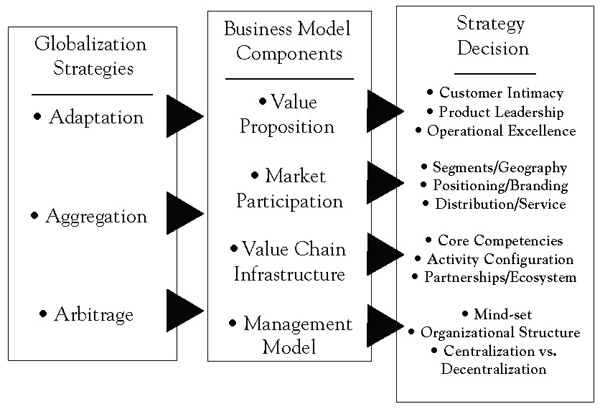

When a company decides to expand into foreign markets, it must take its business model apart and consider the impact of global expansion on every single component of the model. For example, with respect to its value proposition, a company must decide whether or not to modify its company’s core strategyA strategy that a firm develops over time that reflects the firm's key choices about what value it provides to whom in its markets and how, and at what price and cost. as it moves into new markets. This decision is intimately linked to a choice of what markets or regions to enter and why. Once decisions have been made about the what (the value proposition) and where (market coverage) of global expansion, choices need to be made about the how—whether or not to adapt products and services to local needs and preferences or standardize them for global competitive advantage; whether or not to adopt a uniform market positioning worldwide; which value-adding activities to keep in-house, which to outsource, and which to relocate to other parts of the world—and so on. Finally, decisions need to be made about how to organize and manage these efforts on a global basis. Together, these decisions define a company’s global strategic focus on a continuum from a truly global orientation to a more local one. Crafting a global strategyDescribes a firm’s intention to change or adapt its core (domestic) business model to achieve a competitive advantage as the firm engages in globalized operations. therefore is about deciding how a company should change or adapt its core (domestic) business model to achieve a competitive advantage as the firm globalizes its operations.
Linking Pankaj Ghemawat’s generic strategy framework for creating a global competitive advantage, introduced in the Chapter 3 "Generic Strategies for Global Value Creation", with the above business model concept and the full array of globalization decisions a company faces when it evaluates its global options, defines the global strategy formulation (conceptual) framework shown in Figure 4.2 "Global Strategy: A Conceptual Framework". Generic value creation options need to be evaluated for each business model component to address a range of globalization decisions.
Part 2 of this book is organized using this framework, with chapters devoted to the globalization of the different parts of the business model or the skills needed to do so. Before we embark on this journey, the balance of this chapter is devoted to introducing the concept of value disciplines—generic strategic foci for creating value for customers and the key in defining a company’s value proposition—and its implications for the other components of the business model.
Figure 4.2 Global Strategy: A Conceptual Framework
Consider the challenges Microsoft faced in going to China. Today, Bill Gates is a local hero. On a recent visit he met with four members of the Politburo in a single day; most executives would count themselves lucky to talk with one of China’s top leaders. Last spring, President Hu Jintao toured the Microsoft campus in Redmond, Washington, and was treated to a dinner at Gates’s home.
It has not always been this way. Microsoft stumbled for years after entering China in 1992 and lost money there for over a decade. It finally became apparent that almost none of the success factors that drove the company’s performance in the United States and Europe applied to China. To succeed there, Microsoft had to become the “un-Microsoft,” pricing at rock bottom instead of charging hundreds of dollars for its Windows operating system and Microsoft Office applications; abandoning the public-policy strategy it used elsewhere of protecting its intellectual property at all costs; and closely partnering with the government instead of fighting it, as in the United States—a decision that has opened the company to criticism from human rights groups.
The story begins 15 years ago, when Microsoft sent a couple of sales managers into China from Taiwan. Their mission was to sell software at the same prices the company charged elsewhere. It did not work. The problem was not brand acceptance—everyone was using Windows. But no one was paying. Counterfeit copies could be bought on the street for a few dollars. Market share simply did not translate into revenue.
Microsoft fought bitterly to protect its intellectual property. It sued other companies for illegally using its software but lost regularly in court. Country managers came and went—five in one 5-year period. Two of them later wrote books criticizing the company. One, Juliet Wu, whose Up Against the Wind became a local best seller, wrote that Microsoft heartlessly sought sales by any means, that its antipiracy policy was needlessly heavy-handed, and that her own efforts to help bosses in Redmond understand China had been rebuffed.
To add insult to injury, Beijing’s city government started installing free open-source Linux operating systems on workers’ PCs. (The Chinese Academy of Sciences promoted a version called Red Flag Linux.) Meanwhile, security officials were troubled that government and military operations depended on Microsoft software made in the United States.
In 1999, Gates sent a senior executive, who headed the company’s public-policy efforts, to figure out why Microsoft was so hated. After extensive investigation, the executive concluded that Microsoft’s business model in China was wrong: the company had assigned executives that were too junior, selling was overemphasized, and the company’s business practices did not recognize the importance of collaborating with the government.
In response, Gates sent 25 of Microsoft’s 100 vice presidents on a weeklong “China Immersion Tour.” The company hired former Secretary of State Henry Kissinger for advice and to open doors. And it told leaders that Microsoft wanted to help China develop its own software industry, an urgent government priority. The company even commissioned a McKinsey study for Chinese officials in 2001 that, among other things, recommended improving the protection of intellectual property.
The company also initiated talks with Chinese security officials to convince them that Microsoft’s software was not a secret tool of the U.S. government. As a result, in 2003, the company offered China and 59 other countries the right to look at the fundamental source code for its Windows operating system and to substitute certain portions with their own software—something Microsoft had never allowed in the past. Now when China uses Windows in sensitive applications—such as in the president’s office and in its missile systems—it can install its own cryptography.
The opening of a research center in Beijing in 1998 proved to be a real turning point. Created because Gates was impressed with the quality of the country’s computer scientists, the laboratory helped Microsoft revamp its image. It began accumulating an impressive record of academic publications, helped lure back smart émigré scientists, and contributed key components to globally released products like the Vista operating system. The lab soon became, according to local polls, the most desirable place in the country for computer scientists to work.
Microsoft executives had also concluded that China’s weak intellectual property enforcement laws meant its usual pricing strategies were doomed to fail. Arguing that while it was terrible that people in China pirated so much software, Gates decided that if they were going to pirate anybody’s software, he would certainly prefer it be Microsoft’s.
In hindsight, it is clear that tolerating piracy turned out to be Microsoft’s best long-term strategy, and that it is the reason Windows is used on an estimated 90% of China’s almost 200 million PCs. Competing with Linux is easier when there is piracy than when there is not: you can get the real thing, and you get it at the same price. In China’s back alleys, Linux often costs more than Windows because it requires more disks. And Microsoft’s own prices have dropped so low, it now sells a $3 package of Windows and Office to students.
In 2003, Microsoft took a quantum leap forward in China by hiring Tim Chen, who had been running Motorola’s China subsidiary. Chen arrived with entrée to the corridors of power and a practiced understanding of how a Western company could succeed in China. He kept up the blitz of initiatives. Microsoft made Shanghai a global center to respond to customer e-mails. It began extensive training programs for teachers and software entrepreneurs. And it began to work with the ministry of education to finance 100 model computer classrooms in rural areas.
These actions served to change the perception that Microsoft had mainly come to promote antipiracy and to sue people and demonstrated that it had a long-term vision. In the following years, Microsoft invested substantially in China and even invited officials to help decide in which local software and outsourcing companies it should invest. By doing so, it successfully leveraged the synergy that existed between the need of the Chinese economy to have local software capability and the company’s need for an ecosystem of companies using its technology and platform. At the same time, the Chinese government started thinking more like Microsoft: it required central, provincial, and local governments to begin using legal software. The city of Beijing now pays for software its employees had previously pirated.
In another boost for Microsoft, last year, the government required local PC manufacturers to load legal software on their computers. Lenovo, the market leader, had been shipping as few as 10% of its PCs that way, and even U.S. PC makers in China were selling many machines “naked.” Another mandate requires gradual legalization of the millions of computers in state-owned enterprises. As a consequence, the number of new machines shipped with legal software nationwide has risen from about 20% to more than 50% in recent years.